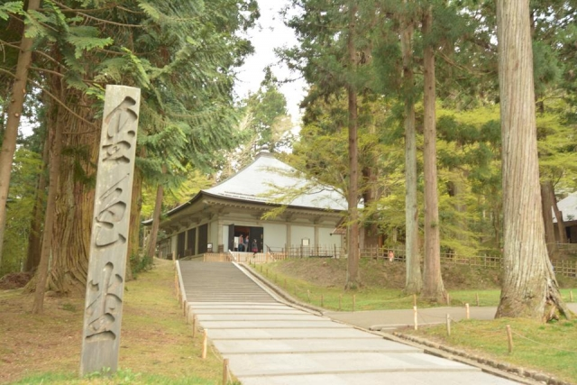
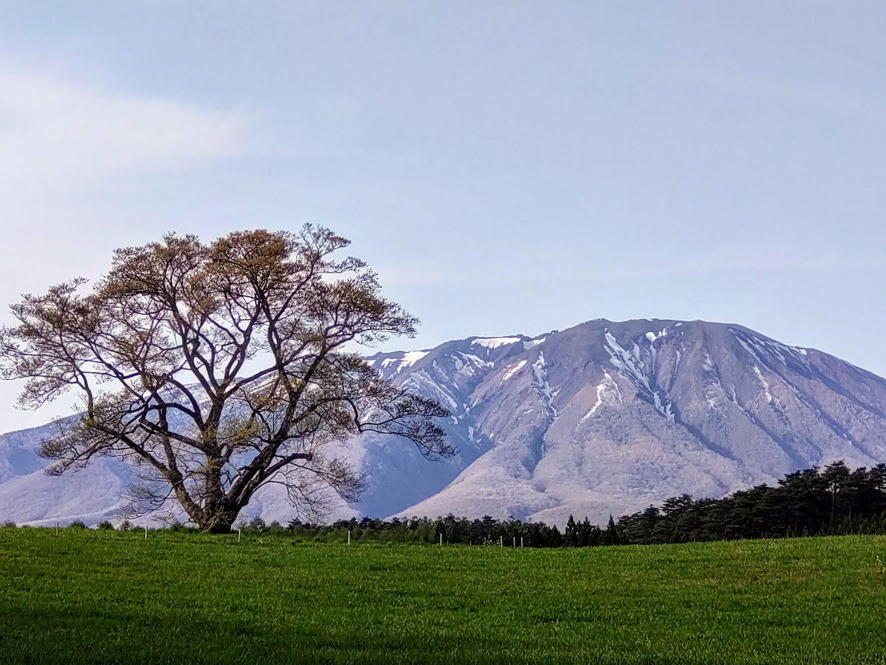

Tourist
中尊寺

中尊寺は、金色堂をはじめとして約3,000点もの文化財を有しており、讃衡蔵（さんこうぞう）と呼ばれる宝物館に一部が展示されています。 1,000年以上も前に極楽浄土を夢見て作られた祈りの品の数々は、都心の博物館で目にするのとでは感じ方がまるで違います。
| 住所 | 〒029-4102 岩手県西磐井郡平泉町平泉衣関202 |
|---|---|
| 営業時間 | 8時30分～17時(11月4日～2月末日は～16時30分) |
| TEL | 0191-46-2211 |
浄土ヶ浜
浄土ヶ浜の地名は、宮古山常安寺七世の霊鏡竜湖が、「さながら極楽浄土のごとし」と感嘆したことから名付けられたと言われています。透明度が高く、穏やかな波が特徴。海開き期間はたくさんの海水浴客でにぎわいます。
| 住所 | 〒027-0001 岩手県宮古市日立浜町32 |
|---|---|
| 営業時間 | [監視・救護所]8:30~17:00 |
| TEL | 0193-62-2111 |
小岩井農場まきば園

岩手県にある小岩井農場まきば園は日本最大級の民間総合農場です。 観光エリアのまきば園ではガイド付きツアーやミニチュアホースとのふれあいコーナー、バター作りなど様々な体験を楽しめることが魅力。 また、農場内にある21棟の建造物が国の重要文化財に指定され、大変貴重な農場として多くの観光客を魅了します。
| 住所 | 〒020-0507 岩手県岩手郡雫石町丸谷地36-1 |
|---|---|
| 営業時間 | 12:00~15:00 |
| TEL | 019-692-4321 |